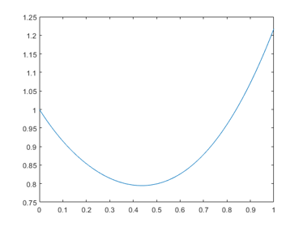
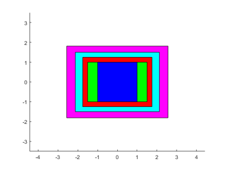
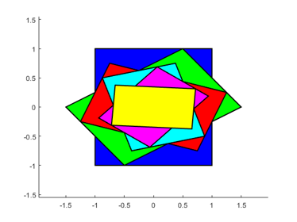
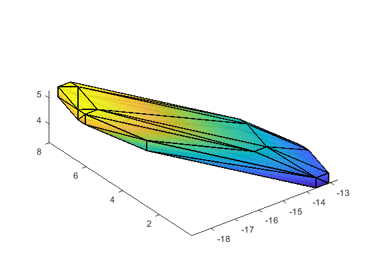
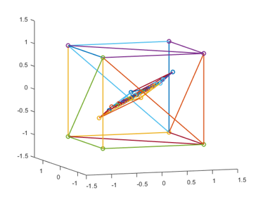
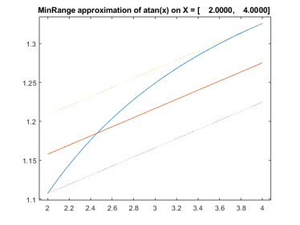
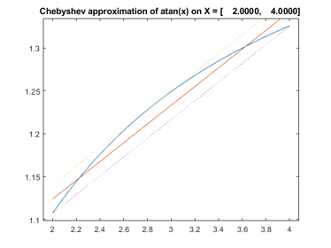
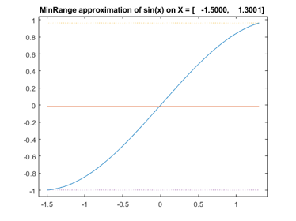
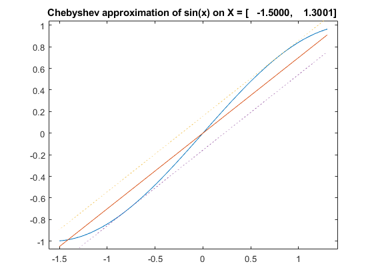
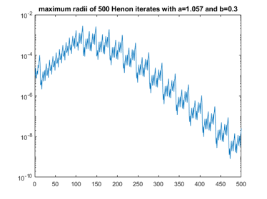

DEMOAFFARI A demonstration of the affine arithmetic package
Contents
- Affine arithmetic
- Fighting the wrapping effect I
- Fighting the wrapping effect II
- Fighting the wrapping effect III
- Fighting the wrapping effect IV
- Fighting the wrapping effect V
- The Min-Range mode and the Chebyshev mode
- Is Chebyshev always better than Min-Range?
- Error terms
- Resetting error terms
- Using affine arithmetic
- The internal structure
- The extra component .range
- Rounding errors
- Example 1: The Henon map
- Example 2: Systems of linear equations
- Example 3: Excluding boxes in global optimization
- Example 4: Verification of a local minimum
- Enjoy INTLAB
Affine arithmetic
Ordinary interval arithmetic uses inf-sup or mid-rad representation for intervals. This implies well-known problems with dependencies, in particular the wrapping effect.
A way to fight this is affine arithmetic. An affine interval X is stored as a midpoint x0 together with error terms x1,...,xk, and it represents
X = x0 + x1*E1 + ... + xk*Ek ,
where E1,...,Ek are parameters independently varying within [-1,1]. Here x0,x1,...,xk are real numbers. A short notation is
X = < x0 ; x1,...,xk > .
An INTLAB example is
format short intval A = infsup(2,3) X = affari(A)
intval A = [ 2.0000, 3.0000] affari X = [ 2.0000, 3.0000]
The represented interval is x0 +/- sum_i=1^k {abs(x_i)}, i.e. the sum of absolute values of the error terms is the radius to the midpoint x0. The different structure of ordinary intervals and affine intervals can be seen as follows.
struct(A) struct(X)
ans =
struct with fields:
complex: 0
inf: 2
sup: 3
mid: []
rad: []
ans =
struct with fields:
mid: 2.5000
err: [5839626×1 double]
rnderr: 0
range: [1×1 intval]
When using affari quantities, INTLAB takes care of the error terms. Basically, with few exceptions to be mentioned, affari quantities can be used as ordinary intervals.
Fighting the wrapping effect I
The concept of error terms can partially diminish the wrapping effect. For example,
ResIntval = A-A ResAffari = X-X
intval ResIntval =
[ -1.0000, 1.0000]
affari ResAffari =
0.0000
So affine variables allow some cancellation. This is by principle not possible for interval arithmetic. This affects the estimation of the range of a function:
f = vectorize(inline('sqr(log2(x+1))-x*cos(x)-x*atan(x)+cosh(x)'))
X = infsup(0,1);
x = linspace(X.inf,X.sup);
close, plot(x,f(x))
ResIntval = f(X)
ResAffari = f(affari(X))
ratio = rad(ResAffari)/rad(ResIntval)
f =
Inline function:
f(x) = sqr(log2(x+1))-x.*cos(x)-x.*atan(x)+cosh(x)
intval ResIntval =
[ -0.7854, 2.5431]
affari ResAffari =
[ 0.2866, 1.6962]
ratio =
0.4235
 The radius of the range inclusion of the affari result is about half the radius for ordinary interval arithmetic. Moreover, affine arithmetic proves that the function has no root in the interval X.
Fighting the wrapping effect II
Affine arithmetic seems most effective for narrow input intervals and many dependencies (for an impressive example, see the Henon iteration below). Consider
syms x
f = inline(char(expand((x-3)^8)))
f =
Inline function:
f(x) = 20412*x^2 - 17496*x - 13608*x^3 + 5670*x^4 - 1512*x^5 + 252*x^6 - 24*x^7 + x^8 + 6561
The expanded formula shows many dependencies. Next we evaluate the expanded formula using ordinary and affine arithmetic. For narrow input, affine arithmetic can cope with the dependencies better than ordinary interval arithmetic:
x = midrad(4,1e-4); yint = f(x) yaff = f(affari(x))
intval yint = [ -657.8345, 659.8345] affari yaff = [ 0.9779, 1.0257]
For wide input, affine arithmetic delivers still better results, however, also with substantial overestimation:
x = infsup(1,2); yint2 = f(x) yaff2 = f(affari(x)) yacc = (x-3)^8
intval yint2 = 1.0e+005 * [ -1.6242, 1.6268] affari yaff2 = 1.0e+004 * [ -4.4118, 5.1735] intval yacc = [ 1.0000, 256.0000]
But also for wide input data affine arithmetic maybe superior to ordinary interval arithmetic. Consider the approximation of the sine by its truncated Taylor series:
f = inline('x - x^3/6 - sin(x)')
x = infsup(0,1)
yint = f(x)
yaff = f(affari(x))
f =
Inline function:
f(x) = x - x^3/6 - sin(x)
intval x =
[ 0.0000, 1.0000]
intval yint =
[ -1.0082, 1.0000]
affari yaff =
[ -0.0809, 0.1169]
Fighting the wrapping effect III
The power of affine arithmetic can be visualized by a vector iteration. Define
A = 0.5*[1 2;-1 1] rho = max(abs(eig(A)))
A =
0.5000 1.0000
-0.5000 0.5000
rho =
0.8660
The matrix A is convergent, i.e. the spectral radius is less than 1. Hence the iteration x_(i+1) := A*x_i converges to zero for any starting vector x_0. This includes interval vectors x_0 provided power set multiplication is used.
When using ordinary interval arithmetic, the well-known wrapping effect occurs:
close, hold on color = [ 'b' 'g' 'r' 'c' 'm' 'y']; clear x x{1} = infsup(-1,1)*ones(2,1); for i=2:6 x{i} = A*x{i-1}; end for i=5:-1:1 plotintval(x{i},color(i)) end axis([-1 1 -1 1]*3.5) axis equal hold off x{:}
intval ans = [ -1.0000, 1.0000] [ -1.0000, 1.0000] intval ans = [ -1.5000, 1.5000] [ -1.0000, 1.0000] intval ans = [ -1.7501, 1.7501] [ -1.2501, 1.2501] intval ans = [ -2.1251, 2.1251] [ -1.5000, 1.5000] intval ans = [ -2.5626, 2.5626] [ -1.8126, 1.8126] intval ans = [ -3.0938, 3.0938] [ -2.1876, 2.1876]
Note that the starting interval x_0 is the most inner box, that is, the boxes become larger in each iteration step.
The same iteration using affine arithmetic looks as follows:
close, hold on x = affari(infsup(-1,1)*ones(2,1)); plotaffari(x,color(1)) for i=2:6 x = A*x; plotaffari(x,color(i)) end axis([-1 1 -1 1]*1.55) axis equal hold off x
affari x = [ -0.7188, 0.7188] [ -0.3751, 0.3751]
Now the big blue square is x_0, and the most inner box is the last iterate, that is, the boxes shrink in each iteration step.
Fighting the wrapping effect IV
The same effect can be observed in larger dimensions and visualized in 3 dimensions. The result of a matrix times affari vector (which is a box) is a polytope. Adding some nonlinearity makes the picture more involved:
A = [ -4 1 2 ; 4 4 -3 ; 1 0 -1 ] X = [ infsup(0.5,1.5) ; infsup(-3.2,-2.8) ; infsup(-4.3,-3.7) ] close, plotaffari(A*affari(X)-sin(X))
A =
-4 1 2
4 4 -3
1 0 -1
intval X =
[ 0.5000, 1.5000]
[ -3.2001, -2.7999]
[ -4.3000, -3.7000]
 Fighting the wrapping effect V
Often matrices have a dominant eigenvalue. This cannot be utilized by ordinary interval arithmetic, but is nicely visible in affine arithmetic. Define A to be the scaled Hilbert 3x3 matrix:
n = 3; A = 0.5*hilb(n) rho = max(abs(eig(A)))
A =
0.5000 0.2500 0.1667
0.2500 0.1667 0.1250
0.1667 0.1250 0.1000
rho =
0.7042
This matrix is convergent as well, and as a positive matrix its spectral radius is an simple eigenvalue. Hence the iteration x_(i+1) = A*x_i converges to the eigenvector to that eigenvalue, the Perron vector, for every non-trivial positive starting vector x_0. This can be observed for the [-1,1]-box as starting vector by INTLAB's affari package:
close, hold on x = affari(infsup(-1,1)*ones(n,1)); plotaffari(x,'n') for i=1:5 x = A*x; plotaffari(x,'n') end axis([-1 1 -1 1 -1 1]*1.5), view(-19,8) hold off
The Min-Range mode and the Chebyshev mode
There are two main modes to perform affine operations, the Min-Range mode and the Chebyshev mode. As the names suggest, these are different linearization modes for nonlinear operations and functions. The difference can be visualized for scalar standard functions by the extra second parameter:
X = infsup(2,4);
affariinit('ApproxMinRange')
YMinRange = atan(affari(X),1)
affari YMinRange = [ 1.1071, 1.3259]
In the Min-Range mode the linearization covers the true range of the function. In contrast, the Chebyshev linearization minimizes the maximum of the error at the price of a little weaker inclusion:
affariinit('ApproxChebyshev')
YChebyhev = atan(affari(X),1)
affari YChebyhev = [ 1.1071, 1.3259]
Here is another example in the non-monotone range of a function, the sine function. In this example we first store the approximation mode, calculate the Min-Range approximation, and then restore the original approximation mode (messages are suppressed):
X = infsup(-1.5,1.3); approxmode = affariinit('ApproxMode',0); affariinit('ApproxMinRange'); YMinRange = sin(affari(X),1) affariinit(approxmode);
affari YMinRange = [ -0.9975, 0.9636]
The best to be done by the Min-Range approximation is equivalent to ordinary interval arithmetic. In contrast, Chebyshev linearization still adheres to the shape of the function:
YChebyhev = sin(affari(X),1)
affari YChebyhev = [ -0.9975, 0.9636]
Is Chebyshev always better than Min-Range?
Note that the final inclusion is the same for both modes in both examples. This is always true for a single operation or a single function. It is due to a special technique used by INTLAB, see the "The extra component .range" below.
The pictures suggest that the Chebyshev mode is always preferable when performing several operations. This is often true, however, there are also examples it the other way around:
format infsup f = inline('sin(x-sqr(x))') x = affari(infsup(0.5,0.6)); affariinit('ApproxMinRange'); yminrange = f(x) affariinit('ApproxChebyshev'); ychebyshev = f(x)
f =
Inline function:
f(x) = sin(x-sqr(x))
affari yminrange =
[ 0.2377, 0.2475]
affari ychebyshev =
[ 0.2377, 0.2499]
Error terms
Only thick interval quantities converted into affari quantities create new and individual error terms for each component. Moreover, operations on affari variables create new error terms as well. The number of current error terms is visible by "affarivars":
n1 = affarivars N = 10; a = affari(midrad(randn(N),rand(N))); n2 = affarivars
n1 =
5839704
n2 =
5839804
Note that for double quantities converted into affari no error terms are needed:
n3 = affarivars N = 10; a = affari(randn(N)); n4 = affarivars
n3 =
5839804
n4 =
5839804
The affari toolbox in INTLAB stores the error terms in sparse mode, so the total number of error terms has some, but not too strong effect on the performance.
Resetting error terms
The number of error terms can be resetted by
affariinit affarivars
ans =
'Affari package is initialized to zero error terms'
ans =
0
However, this should be handled very carefully! After reset by affariinit, previously defined affari variables cannot be used any longer without jeopardizing the rigor of computed results. This is because, after resetting, new variables may carry new error terms which already used by other variables. The same applies to save and load of affari variables. Unfortunately, I cannot control such a misuse, it is the user's responsibility.
Using affine arithmetic
When using affine arithmetic, some care is necessary. We just mentioned that it is hazardous to reset the number of error terms and to continue to use existing variables.
Unexpected though not wrong results are possible when using affine variables not appropriately. A well-known property of affine arithmetic is the possibility of cancellation:
X = infsup(2,3) intDiff = X - X A = affari(X) affariDiff = A - A
intval X = [ 2.0000, 3.0000] intval intDiff = [ -1.0000, 1.0000] affari A = [ 2.0000, 3.0000] affari affariDiff = [ 0.0000, 0.0000]
However, one might try the following:
X = infsup(2,3) WrongDiff = affari(X) - affari(X)
intval X = [ 2.0000, 3.0000] affari WrongDiff = [ -1.0000, 1.0000]
As can be seen the result is the same as of ordinary interval arithmetic. The reason is that the two calls "affari(X)" create individual, i.e. independent variables. They do not share error terms, and the idea of affine arithmetic is spoiled.
The internal structure
The default display is to see the interval represented by the affari quantity:
X = midrad(randn(2,3),rand(2,3));
A = affari(X);
format intval
A
affari A = [ 0.3278, 1.3554] [ -0.6972, -0.1242] [ -1.7359, -0.6913] [ -1.0218, -0.6852] [ -0.0433, 0.4671] [ 0.4787, 0.5336]
The internal structure of affine variables can be inspected as follows:
format errorterms
A
affari A.mid =
0.8416 -0.4107 -1.2136
-0.8535 0.2119 0.5061
affari A.err =
(4,1) 0.5138
(5,2) 0.1683
(6,3) 0.2865
(7,4) 0.2551
(8,5) 0.5222
(9,6) 0.0274
affari A.rnderr =
0 0 0 0 0 0
affari A.range =
[ 0.3278, 1.3554] [ -0.6972, -0.1242] [ -1.7359, -0.6913]
[ -1.0218, -0.6852] [ -0.0433, 0.4671] [ 0.4787, 0.5336]
The extra component .range
Affari variables in INTLAB carry another structure component, the range. This proved to be important to reduce the range of the final result in several ways:
A freshly defined affari interval carries exactly one nonzero error term, namely its radius:
n1 = affarivars A = affari(infsup(1,3)) n2 = affarivars
n1 =
9
affari A.mid =
2
affari A.err =
(10,1) 1
affari A.rnderr =
0
affari A.range =
[ 1.0000, 3.0000]
n2 =
10
Thus A*A in affari arithmetic is the same as the multiplication using midpoint-radius form. In the example the result is
A = [1,3] = <2,1> and therefore
A*A = <2,1> * <2,1> = <4,2+2+1> = <4,5> = [-1,9] .
This effect of overestimation is well-known. It follows that, without proper action, the result of affari arithmetic is worse that ordinary interval arithmetic.
If in the example the reciprocal of A*A is taken, this leads toan unnecessary division by zero. In contrast, ordinary interval multiplication yields A*A = [1,9] with no problems taking the reciprocal.
The remedy in INTLAB's affari toolbox is to take the intersection of the affari range and the range obtained by ordinary interval arithmetic. With this method the affari result is never worse than ordinary interval arithmetic.
A2 = A*A
affari A2.mid =
4
affari A2.err =
(10,1) 4
(11,1) 1
affari A2.rnderr =
0
affari A2.range =
[ 1.0000, 9.0000]
Note that the error terms sum up to 5, as for midpoint-radius arithmetic, so without the range-trick the result would be [-1,9]. Now the reciprocal is safely computed as well:
R = intval(1/A2)
intval R = [ 0.1111, 1.0000]
Rounding errors
Enevitably, floating-point operations are afflicted with rounding errors. To produce rigorous results, interval bounds are rounded outwards.
The affari toolbox solves this problem by carrying, besides the midpoint and range, an extra component for the rounding error. Independently, M. Kashiwagi from Waseda University had the same idea. The user does not have to care about that. However, Kashiwagi gave the important advice to allow the possibility to put not only quadratic terms but also rounding errors in extra error terms. This is controlled as follows:
affariinit('RoundingErrorsToRnderr') n1 = affarivars B1 = A*A n2 = affarivars affariinit('RoundingErrorsToErrorTerm') B2 = A*A n3 = affarivars
n1 =
12
affari B1.mid =
4
affari B1.err =
(10,1) 4
affari B1.rnderr =
1
affari B1.range =
[ 1.0000, 9.0000]
n2 =
12
affari B2.mid =
4
affari B2.err =
(10,1) 4
(13,1) 1
affari B2.rnderr =
0
affari B2.range =
[ 1.0000, 9.0000]
n3 =
13
As can be seen the rounding errors in the second example are zero, they are put into an extra error term. This method proves useful as by the following striking example.
Example 1: The Henon map
The Henon map is described by the discrete dynamical system
x_i+1 = 1 - a*x_i^2 + y_i y_i+1 = b*x_i
It is known that this map is nearly chaotic for b=0.3 and a=1.05, the map is chaotic for b=0.3 and a>=1.06.
We first try ordinary interval arithmetic for a=1.05, a non-chaotic mapping. The initial state is x0 = y0 = midrad(0,1e-5).
format _ tic a = 1.05; b = 0.3; X = midrad(0,1e-5)*ones(2,1); for k=1:50 X = [ 1-a*X(1)^2+X(2) ; b*X(1) ]; if mod(k,10)==0 X end end Tintval = toc
intval X =
-0.544_
0.3481
intval X =
[ 0.0135, 0.0589]
[ 0.2499, 0.2570]
intval X =
[ -0.8424, -0.1875]
[ 0.3314, 0.3888]
intval X =
[ -112.1736, 1.4218]
[ -3.1014, 0.4284]
intval X =
+/-Inf
+/-Inf
Tintval =
0.0702
As expected, data dependencies cause an exponential growth of the radius. Now the result using INTLAB's affari variables:
format intval tic a = 1.05; b = 0.3; X = affari(midrad(0,1e-5)*ones(2,1)); for k=1:50 X = [ 1-a*X(1)^2+X(2) ; b*X(1) ]; if mod(k,10)==0 X end end Taffari = toc
affari X =
-0.5437
0.3481
affari X =
0.037_
0.2534
affari X =
-0.6158
0.3740
affari X =
-0.1553
0.2878
affari X =
-0.7152
0.3773
Taffari =
0.4432
Affine arithmetic needs considerably more computing time, however, the result is achieved without any specific analysis whatsoever.
Next we approach the chaotic Henon map. We also make sure to use the true specified parameters a and b by initializing them as enclosing intervals.
We perform 500 iterations and display the radii of every 100th iterate. Notice that the initial values are afflicted with an error 1e-5.
format long affariinit affariinit('RoundingErrorsToErrorTerm') a = intval('1.057'); b = intval('0.3'); X = affari(midrad(0,1e-5)*ones(2,1)); K = 500; y = zeros(1,K); for k=1:K X = [ 1-a*X(1)^2+X(2) ; b*X(1) ]; y(k) = max(rad(X)); end n1 = affarivars close, semilogy(1:K,y), title('maximum radii of 500 Henon iterates with a=1.057 and b=0.3') X
ans =
'Affari package is initialized to zero error terms'
n1 =
2502
affari X =
-0.1360269_______
0.28363249______
 Example 2: Systems of linear equations
Usually affine arithmetic shows its power when evaluating nonlinear functions. Nevertheless we test it on solving systems of linear equations. The following matrix is randomly generated with relative errors 1e-8 in each component and random right hand side. Note that the matrix is well-conditioned.
n = 20; A = randn(n).*midrad(1,1e-8); b = randn(n,1);
The routine solvewpp is a general routine solving linear systems by Gaussian elimination with partial pivoting, and subsequent forward and backward substitution. When called with interval matrix, the operations are performed in ordinary interval arithmetic; called with affine matrix, affine arithmetic is used.
affariinit
affariinit('RoundingErrorsToRnderr')
tic
Xint = solvewpp(A,b);
Tint = toc
tic
Xaff = solvewpp(affari(A),b);
Taff = toc
n1 = affarivars
v = [1:2 n-1:n];
Xintv = Xint(v)
Xaffv = Xaff(v)
med = median(rad(Xint)./rad(Xaff))
ans =
'Affari package is initialized to zero error terms'
Tint =
0.137530400048238
Taff =
1.865173119393159
n1 =
400
intval Xintv =
1.0e+002 *
[ -1.35642406057891, 1.35947398501582]
[ -0.63076479716455, 0.64680361949450]
[ -0.02009216670069, -0.01890431411631]
[ 0.00952018510771, 0.01020478598607]
affari Xaffv =
0.1534__________
0.8022__________
-1.94873_________
0.986025________
med =
4.467775966253623e+06
As can be seen the radius of the result is improved by about 5 orders of magnitude using the affari package. However, in particular due to interpretation overhead, this approach is much slower.
Also note that we did not use extra error terms for rounding errors which is important for the Henon iteration. In case of linear systems there is almost no difference - except increasing the number of error terms:
affariinit
affariinit('RoundingErrorsToErrorTerm')
Xint = solvewpp(A,b);
Xaff = solvewpp(affari(A),b);
n2 = affarivars
v = [1:2 n-1:n];
Xintv = Xint(v)
Xaffv = Xaff(v)
med = median(rad(Xint)./rad(Xaff))
ans =
'Affari package is initialized to zero error terms'
n2 =
3480
intval Xintv =
1.0e+002 *
[ -1.35642406057891, 1.35947398501582]
[ -0.63076479716455, 0.64680361949450]
[ -0.02009216670069, -0.01890431411631]
[ 0.00952018510771, 0.01020478598607]
affari Xaffv =
0.153359________
0.802164________
-1.94873_________
0.986025________
med =
1.695079241351227e+07
In this example no nonlinear functions are involved, thus it makes no difference to use Min-Range or Chebyshev approximation.
Example 3: Excluding boxes in global optimization
Global optimization problems lead to finding all zeros of a system of nonlinear equations (the Jacobi-matrix) in a given box. It is known that the hard problem is to exclude boxes: Indeed for conventional numerical algorithms this is almost impossible - at least rigorously.
However, ordinary interval computations suffer from overestimations and the wrapping effect. Sometimes affine arithmetic can improve the situation. In the following we do a brute-force binary search by dividing an initial box into K parts in each dimension, thus producing K^n subboxes for dimension n. Then we count how many subboxes can be excluded, that means, at least one component of the function value does not include zero.
We consider Branin's test function, a well-known example in global optimization.
% Branin test function f = @(x)((x(2) - x(1)^2*5.1/(4*pi^2) + 5*x(1)/pi - 6)^2 + 10*(1-1/(8*pi))*cos(x(1)) + 10); X = infsup(-10,10)*ones(2,1); % initial box as given in the literature K = 16; % 16^2 = 256 subboxes s = 0; % subboxes excluded by interval arithmetic t = 0; % subboxes excluded by affine arithmetic for i=1:K for j=1:K XX = gradientinit([ infsup( X(1).inf+(i-1)*diam(X(1))/K , X(1).inf+i*diam(X(1))/K ) ; ... infsup( X(2).inf+(j-1)*diam(X(2))/K , X(2).inf+j*diam(X(2))/K ) ]); y = f(XX); Y = f(affari(XX)); s = s + any(~in(0,y.dx(:))); t = t + any(~in(0,Y.dx(:))); end end disp(' ') disp(['Ordinary interval arithmetic could exclude ' int2str(s) ' out of ' ... int2str(K^2) ' subboxes.']) disp(' ') disp(['Affari arithmetic could exclude ' int2str(t) ' out of ' ... int2str(K^2) ' subboxes.'])
Ordinary interval arithmetic could exclude 229 out of 256 subboxes. Affari arithmetic could exclude 245 out of 256 subboxes.
In such a case a strategy may be to use ordinary interval arithmetic first, and to use affine arithmetic for the cases which are not decided.
Example 4: Verification of a local minimum
It is known that near [9;2] there is a local minimum of Branin's function. This can be verified as usual:
X = verifylocalmin(f,[9;2]) % inclusion of a local minimum
intval X = 9.42477796076938 2.47500000000000
It has been verified that for every x in X the Hessian of f is symmetric positive definite, in particular for the stationary point included by X. It follows that indeed there is a local minimum of Branin's function in X.
The applicability of that approach can be tested by intentionally widening the box X. Then it is seen that for wider radii the Hessian computed by affine arithmetic can be verified to be s.p.d.
format short for r=1.05:0.05:1.25 XX = X+midrad(0,r); Y = f(hessianinit(XX)); IntLocalMin = isspd(Y.hx); Y = f(affari(hessianinit(XX))); AffLocalMin = isspd(Y.hx); Res = [ r IntLocalMin AffLocalMin ] end
Res =
1.0500 1.0000 1.0000
Res =
1.1000 0 1.0000
Res =
1.1500 0 1.0000
Res =
1.2000 0 1.0000
Res =
1.2500 0 0
Enjoy INTLAB
INTLAB was designed and written by S.M. Rump, head of the Institute for Reliable Computing, Hamburg University of Technology. Suggestions are always welcome to rump (at) tuhh.de